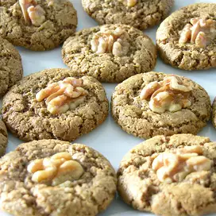

Cookies

Sweeten up your Passover with one of these delicious cookie ideas.
Ingredients
-
1 ½ cups matzo cake meal
- 1 cup white sugar
- ¾ cup potato starch
- 3 eggs
- ¼ cup chocolate chips, or to taste (Optional)
- ¼ cup chopped walnuts, or to taste (Optional)
- 2 tablespoons lemon juice
- 2 teaspoons cinnamon sugar, or to taste
steps
- Preheat oven to 350 degrees F (175 degrees C). Grease a baking sheet.
- Stir matzo cake meal, sugar, potato starch, eggs, chocolate chips, walnuts, and lemon juice together to make a dough
- Divide the dough into thirds. Shape each piece of dough into a log and place on the prepared baking sheet.
- Bake in the preheated oven until browned, about 30 minutes.
- Remove logs from oven and cut into slices.
- Arrange the slices on the baking sheet; sprinkle with cinnamon sugar.
- Return to oven and bake until the mandelbread are browned and crisp, about 10 more minutes. Turn the mandelbread after 5 minutes to crisp both sides.